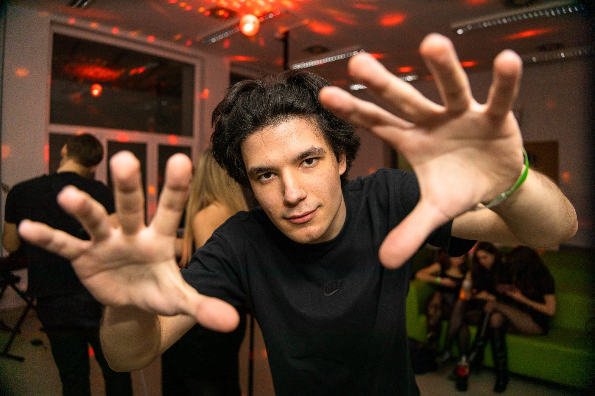
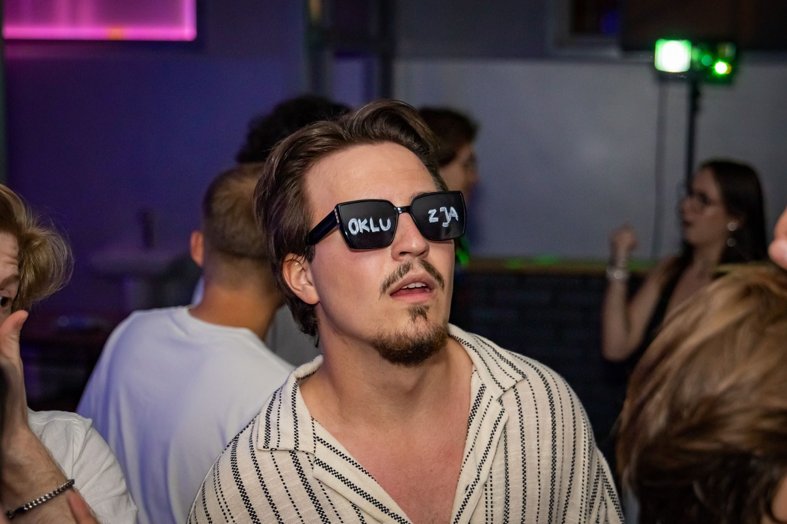

Fotografuję ludzi, momenty i emocje.
Imprezy, rocznice i jubileusze — bez sztucznego ustawiania i bez przeszkadzania w tym, co dzieje się naprawdę. Jestem tam, gdzie warto być z aparatem, i staram się uchwycić to tak, żeby po latach nadal coś znaczyło.
Imprezy
Energia, która nie stoi w miejscu. Reportaż z jednego wieczoru – od pierwszych świateł na parkiecie, aż po absolutny finał.
z pełną mocą...
jest cisza.

Rocznice i jubileusze
Mniej ludzi, więcej znaczenia. Intymna opowieść o chwilach, spojrzeniach i gestach, które znają się od lat.

Nazywam się Stanisław Knul. Fotografuję na terenie województwa łódzkiego — przede wszystkim imprezy oraz rocznice i jubileusze.
To dwie moje główne specjalizacje. Moje portfolio traktuję jak starannie wyselekcjonowaną wystawę, do której trafiają tylko te kadry, które naprawdę opowiadają historię.
W fotografii zależy mi na naturalności. Obserwuję, co dzieje się wokół, reaguję na moment i staram się uchwycić emocje bez sztucznego ustawiania.
Pracuję na nowoczesnym, profesjonalnym i niezawodnym sprzęcie, dzięki czemu mogę skupić się na fotografowaniu i reagować wtedy, kiedy dzieje się coś ważnego.
Jeśli podoba Ci się mój kinowy, reportażowy sposób patrzenia na fotografię, chętnie porozmawiam o Twoim wydarzeniu.